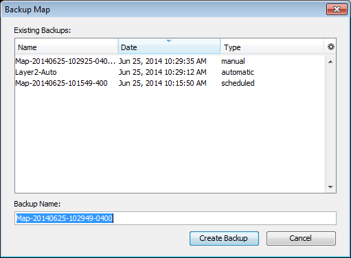
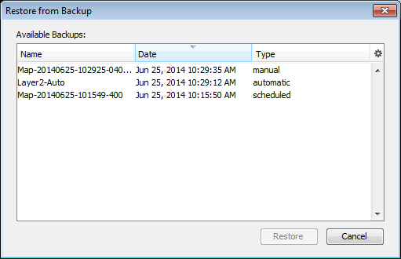
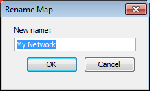
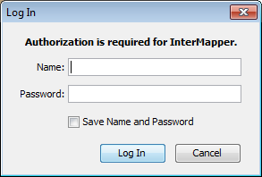

Note:
IM = Map List window, InterMapper
Map = Map window
| Command | Description |
| New Map |
Creates a new map. |
| Save... |
Save a PDF report to disk. (Flows) |
|
|
|
| Close |
Closes the current window. |
| Backup... |
Backs up the current map. |
|
Restores the current map from a backup. |
|
|
Renames the selected map. |
|
| Duplicate... |
|
|
|
|
| Import (submenu) |
Choose from these submenu commands:
|
| Export (submenu) |
Choose from these submenu commands:
|
| Server (submenu) |
Choose from these submenu commands:
|
|
|
|
| Print... |
Prints the current window on the currently selected printer. (Map) Prints a report using the current time range and filter settings. (Flows) |
|
Prints a single page of a map in the current view. (Map) |
|
|
Exits the application. Note: On Macintosh, this command is available from the InterMapper or IM RemoteAccess menu. |
Creates a new empty map. See the Autodiscovery
Saves a PDF report to disk. A standard file dialog appears. The report contains the Top Hosts, Top Ports, and Top Sessions tabs.
Choose a recently-opened map from a submenu.
Closes the current window.
Note: Closing a map window does not stop the map's devices from being
polled or from sending notifications. To prevent a map from being polled,
disable the map in the Enabled Maps section of the Server
Settings window

Makes a snapshot backup of the current map.
InterMapper creates the following backup types:

Restores from a previous backup of a map.
The Restore Map window shows a list of previous backups. Click the backup you want to restore, the click OK.
See Backup... (above) for information on backup types.

Renames the selected map.
Enter a new name for the selected map, then click OK.
Makes a copy of the selected map.
If you have administrator privileges, use this command to disable the current map (Map Window) or the selected map (Map List window.) A confirmation dialog appears.
Use the Import > Map...
Copies a map file saved on the InterMapper RemoteAccess machine to the InterMapper server and makes it available. (Use the Export... command to save the file on the InterMapper RemoteAccess machine.)
Imports custom probe files to your server. For more information, see the InterMapper Developer Guide.
Use the Export Map... command to save a copy of your map on your local machine or network drive. This is an easy way to copy a map from one server to another. After you export the map file, you can then import it to a different server. You can also export a tab-delimited file for use in a spreadsheet or database.
For more information, see

In the Map List window, click the server you want to log into, then choose Log In...from the File menu. An authentication window appears:
Enter a Name and
Note:
In the Map List window, click a map on the server you want to log out from, then choose Log Out. You are disconnected from the selected server.
Note: Open windows for any maps on the selected server remain open after you log out, but the maps are dimmed to indicate that they are no longer active.
Opens a standard Page Setup dialog.
From a map, this command prints the current window on the currently selected printer. This operation uses as many pages as necessary to print the entire map or window contents.
From the Flows window, this command prints a report using the Flows window's current time range and filter settings.
Exits the application.